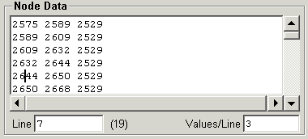

The panel is filled in automatically when selecting a node from the Node Tree if Auto Load Data is enabled and the size of the the data is less than the Auto Data Size threshold. A read of the data may also be forced using the Read button.
In the case of multidimensional arrays, the data will shown in groups of the inner dimension, with successive groups on a new line. In order to prevent very long lines, which may cause a problem for the editor, the number of data values to be displayed per line is limited to a maximum value (default 10). This maximum value may be changed from the Auto Data Size setup window. The current value may also be changed by typing the new value in the Values/Line entry box, followed by the Enter key.
The current line containing the insertion cursor is shown in the Line box. You may enter a new line number, followed by the Enter key to go to the line. This entry accepts arithmetic expressions, so you may type an expression like 75/3+1 to go to the line containing the 75th data value. The number in parenthesis following the line number is the number of the data value which is first on the current line.
The data in the following figure is dimensioned (3,60) and so is shown as 60 lines of 3 values each, and the cursor is currently on the 7th line, which contains data values 19, 20 and 21.

When formatting the data for display, the C "%g" format is used for real data and the "%d" format for integer data. When converting the data for writing to the node, the C routines atof() and atoi() are used for real and integer data, respectively. Character data is treated as C strings.
When creating a new node with the Create button, the data values in this panel, will be used to assign data to the node. When modifying an existing node with the Modify button, these values will be used if they exist, otherwise the actual node data is used. When doing data type conversions, this panel should generally be cleared of data. Therefore, the program will automatically clear this panel when the Data Type on the Data Description panel is changed. The Read button may be used to reload the existing data if desired.
When the Node Label in the Node Description panel is a known CGNS type, clicking Mouse Button 3 in this window will pop-up a panel which lists the data properties associated with the CGNS label type. If there is predefined data associated with the CGNS label type, then a list of these values will be presented instead, allowing selection of one of the predefined types.